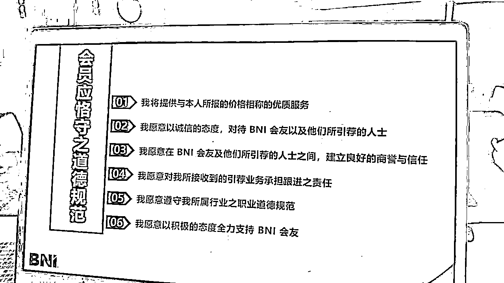
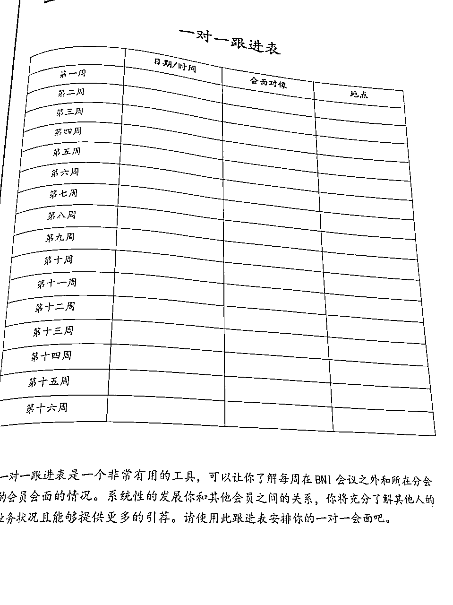
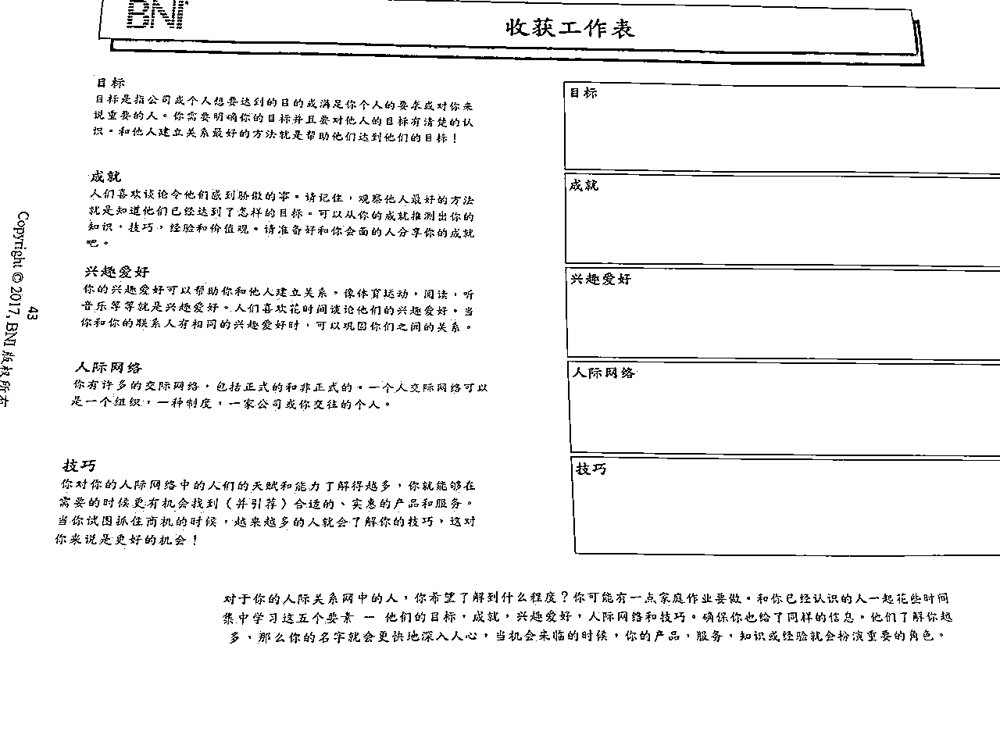
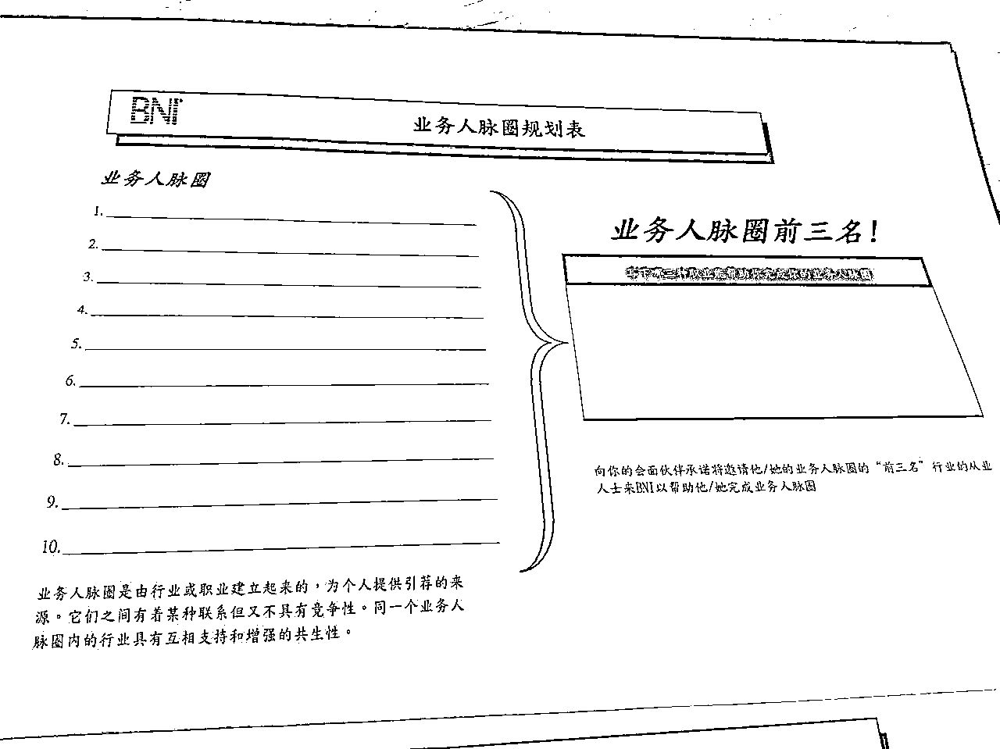
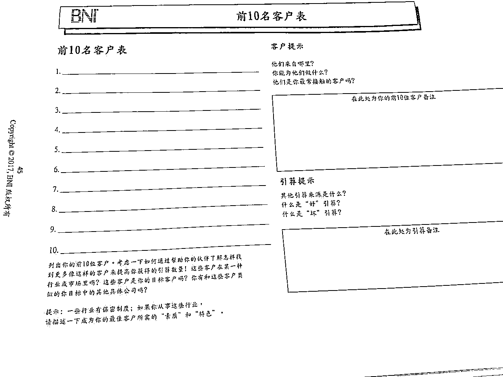
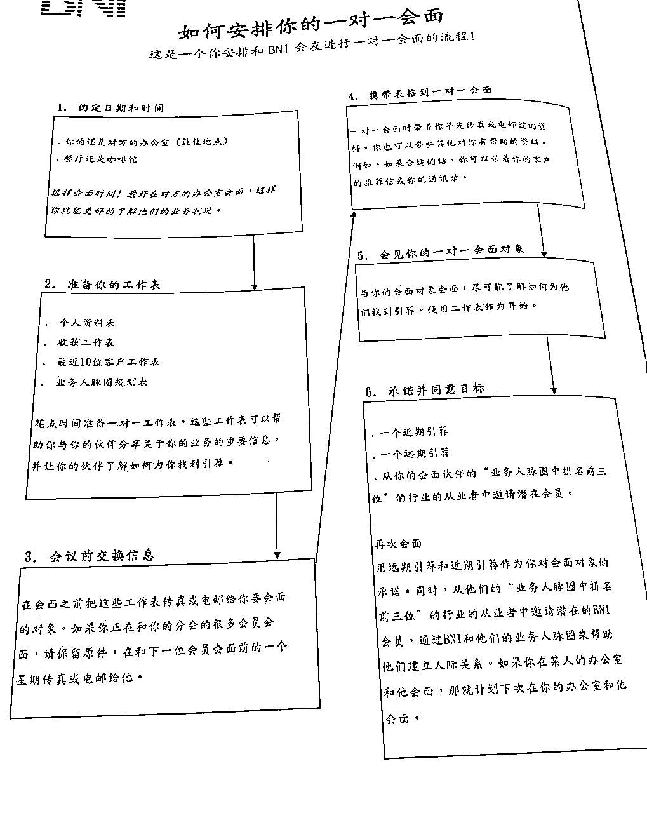
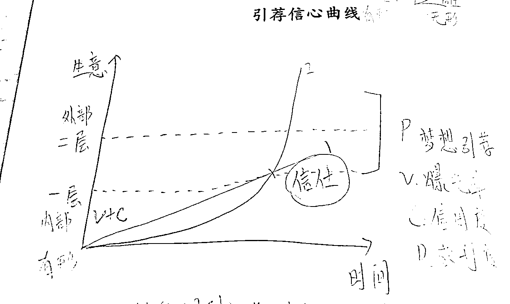

来源：https://ooldqbgx5t.feishu.cn/docx/TCtSdoPiooAtLtxhuixcjUD0nog
大家好，我是莎拉，定居深圳，
生财4年会员，生财航海家，国家高级烘焙技师，
擅长实体门店运营，私域运营，个人品牌内容输出。
最近加入了一个线下商会组织，感觉这个系统挺不错的，
于是把他们的整个运作机制和工具，方法论，都梳理总结，分享出来。
这些内容，对于我们日常生意运营，人脉经营，同样非常有用。
本文的主题框架如下：
第一：什么是BNI？
第二：BNI如何帮助你获得成功？
第三、BNI的优势和待提升之处。
BNI是 Business Network International 的缩写，
即国际商业网络，是一个全球的商业网络组织。
致力于帮助会员照商业中建立和发展关系，
最终实现经济上的成功。
BNI 是由美国的Ivan Misner博士于1985年创立，
该组织目前遍布全球超过66个国家和地区，
拥有7800个分会和22万会员。
目前在大陆的深圳，广州，佛山，厦门，香港，澳门，台湾有分会。
理念：Givers Gain，先舍后得，或者是预先取之必先予之。
你为他人介绍生意，作为回报，别人也会介绍生意给你。
使命：通过有组织的，积极的，专业的口碑行销，来帮助会员们提高业务量，并协助他们和高素质的专业人士之间发展长期的友好的合作关系。
道德规范：
BNI入会宣誓，必须遵守道德规范

入会需填写申请表格，
支付费用7250/年，
上门询问考核，
提交委员会审核，
通过审核入会。
培训费用：支付场地费用180
每周工作日固定某一天早晨6:30-9点参加商务早会，
不同分会开早会的时间不一样，有的周二有的周五。
早会费用：酒店场地早餐费用会员180-嘉宾200
BNI的会员也会通过费用和时间等各方面作为门槛，进行筛选：
1.能够支付一年7000多，每月720酒店早餐费用的人士
2.能够自由安排自己行程，在工作日早上出席会议的老板/高管/自由职业者
3.出席商务早会，需着正装，需具备公众表达发言，人际沟通交流能力。
特点一：每个分会，每个行业只允许一个代表，避免竞争
特点二：每一个会员其实都是自己的销售顾问/销售渠道，教育他们如何帮我们引荐业务
执行董事ED
国董ND
全球支持团队GST
领导团队（LT Leader Team）：团队主席，副主席，财政秘书，
会员委员会（MC，membership committee）
新会员辅导师
教育协调员
活动统筹员
来宾接待员
增长统筹
协力团队（客户相似或一样，业务相关，如餐饮，烘焙，咖啡，等行业可结成协力团队）
每周一次线下早会
每次早会60秒介绍自身业务
每周一对一拜访
每周邀请嘉宾
每周给会员提供引荐（生意机会或者人脉引荐）
每周企业走访
定期培训
定期能量营团建
其他线下活动
分会红绿灯🚦
形成分会红绿灯报告的七个因素：
1.分会人数
2.6个月会员增长
3.续会率(12个月）
4.引荐
5.嘉宾
6.转换率
7.缺席率
如何获得分数：
1）分会人数有或大于30人可获得15分。
2）6个月会员人数增长超过4人可获得15分。
3）12个月续会率等于或大于70% 可获得15分。
4）每周每位会员引荐宗数等于或大于1.1可获得15分。
5）每周嘉宾人数等于或超过2位可获分数15分。
6）转换率等于或大于20%可获得10分。
7）缺席率等于或少于5%可获得15分。
灯号:
0-25 黑灯
30-45 红灯
50-65 黄灯
70-100 绿灯
绿灯分会吸引更多海外会员来参访。长期绿灯的分会代表分会的稳定发展。
会员成功之道培训 MSP member success progam
会员进阶培训
30/45/60秒自我陈述
5/8/10分钟演讲
1对1业务拜访
引荐技巧
协力团队
领导团队培训
官网www.bni.com
Bni成功网站：www.bnisuccess.com
bni博客：www.bnipodcasts.com
每周工作日开一次商务早会：
会议议程有20个环节：
自由交流时间
欢迎来宾并介绍领导团队，会员委员会，来宾接待人，教育协调人和活动协调人
BNI的宗旨和概括
人际交流教育
宣布杰出会员
传递名片盒
欢迎新会员续约会员
会员60秒陈述
欢迎嘉宾，嘉宾自我介绍
副主席报告
会议委员会报告
财务秘书宣布轮流演讲
会员10分钟演讲
引荐&见证
引荐真实性检查
财务秘书报告
主席感谢来宾到访
嘉宾发表总结感受
BNI活动通告，提示和特别报告
抽奖
会议结束
一对一拜访是为了了解你的会员并提升你给他的引荐
一对一跟进表：用来记录跟进你的一对一拜访计划

会员资料表：填写拜访对象的基本信息
收获工作表：填写拜访对象的目标，成就，兴趣爱好和拥有技巧

业务人脉圈：填写拜访对象的行业职业建立起的，为个人提供引荐来源的，行业之间有着某种联系又不具备竞争性。同一个业务人脉圈内的行业具有相互支持和增强的共生性。

前10客户表：拜访对象的前10名客户

一对一信息：拜访对象描述产品服务，差异化优势，目标市场客户，相同市场的行业，引荐开场白，怎样的话为合适引荐机会，如何衡量引荐质量，不合适的引荐，一般人对业务的误解和回应方法。
安排一对一拜访：约定日期和时间，准备工作表，会面前交换信息，携带表格到一对一会面，会见你的一对一对象，承诺并同意目标

人人都想自己生意更好，获得生意/引荐的前提，是建立和积累他人对自己的信任。
引荐信心曲线是一个非常形象的图，解释了引荐量和时间之间的关系。

坐标横轴是时间，纵轴是生意，引荐是一条从0开始的增长曲线。
你对生意的引荐有一个期待，这是曲线1，
实际的生意引荐又有一条轨迹，这是曲线2.
曲线1和曲线2相交的点，是一个引荐突然增长的爆发点。
在这个爆发点以下的引荐，是内部成员之间的引荐，
爆发点以上的引荐，是成员给你带来的外部引荐。
影响引荐的3大关键因素VCP：
V: Visibility 曝光率
C: Credibility 信用度
P: Profitability 获利度
在建立商业关系时，
首先，要提高曝光率让人看见你，
其次，通过专业和靠谱建立信任，
最后，获利，实现经济上的成功
BNI的长期主义
不同行业不同产品不同人，获得引荐不一样
有形产品/日常需求的产品服务，容易获得引荐
无形产品/日常需求频率低的产品服务，引荐频率较低
每个人的付出，每个人的承载能力，用心投入程度，坚持时间不一样
获得的引荐也不一样
在美国BNI，一个人要想在BNI达到引荐爆发，需要3年。
第一年学习，第二年建立信任，第三年收获。
在中国， 据说只需要18个月。
5.3.1，培训
参加培训，多复习，多学，多总结应用，多分享，多交流，多输出
参加培训次数越多，获得引荐越多
5.3.2，出席
早到，投入状态，增加曝光率
5.3.3，嘉宾
积极邀约嘉宾
开放人脉链接
5.3.4，一对一
了解对方和自己的专业
深入交流
每周至少一次一对一拜访
5.3.5，引荐
给予他人生意机会
增加信任
有成交金额
一般引荐 good referral
理性引荐 ideal referral
梦想引荐 dream referral（英国某个绘画家，收到伊丽莎白女王助理发来的给女王画画的邀约电话，是因为BNI的引荐，开一单吃三年）
B2B业务（从上往下越来越精准）
任何人
行业
企业
部门
职位
姓名
B2C业务（从上往下越来越精准）
任何人（高净值人群）
你的产品服务是什么
哪种类型的人会对你的产品服务有需求
我认识的人可能会有需要
你的引荐需求
允许会友提及你的名字
以个人信息或邮件做推荐介绍
核实对方需求，告知他你的会员可提供协助
核实对方需求，替双方落实会面时间
核实对方需求，落实三方同时出席的会面时间
如何在60秒内讲清楚自己的业务？
如特定的产品或服务
目标市场
特定利润等
按照产品分类，莎拉的LCD有很多个细分
——日常目面包曲奇点心等
——生日蛋糕
——节假日蛋糕（圣诞，父亲节，母亲节，情人节，儿童节等）
——节假日产品（青团，粽子，月饼，年货）
——企业/学校/活动/会议茶歇甜品台
——亲子DIY烘焙
——莎拉烘焙技术线下课
——莎拉陪你终身成长知识星球
——莎拉开店创业指导课
小册子，信件，推荐函，样品，图片等等
姓名+公司名称+代表行业
LCD
案例/见证
所需要的引荐
我是欧申梅（莎拉真名）
专业领域是糕点烘焙
我是国家高级烘焙技师，从事烘焙行业7年
我们公司提供新鲜现烤，动物奶油的蛋糕甜品
为每一个班级量身定做毕业蛋糕，
蛋糕上有全班同学和老师的名字，以及指定的祝福语。
我们已经为深圳中学，红岭中学等名校在内的50多所学校提供毕业蛋糕。
我需要的引荐是，
幼儿园，小学，初中，高中，大学的班级家委负责人。
提前准备好要分享的业务主题
书写演讲稿
制作PPT
邀约10-15个亲人朋友嘉宾
练习稿子
早会演讲
长篇大论说产品特色
太多专业术语
任何人/一条龙
不要随便接受提问/不要销售
不用或少用PPT
不要忘记准备礼物
1分钟概览
2分钟usp市场独特定位
1分钟介绍重点客户
3-4分钟，如何为你引荐
2-3个LCD
分享成功案例
说故事
请会员见证
带嘉宾
准备PPT/道具
要有助手和B计划
练习练习再练习
出席：会员亲自出席非常重要，亲自出席将带来更多生意引荐和商务关系
替代人：如果不能出席，客户朋友加入同事都可以培训为自己的替代人
早到：成功的会员都是早上6:00-6:30到达，守时诚信
自由交流：给引荐和收引荐都是靠关系的，早到，会后继续留下来，安排时间做1对1拜访。BNI人脉培训课程会让你满怀信心地走进陌生人群中，挥洒自如地进行人脉交流。
30/45/60分钟演讲：有备而战。精准，教育会友如何为你引荐生意。BNI的演讲培训，助你建立信心，令你的演讲更动人。
引荐单：会友教育你如何为他们找到引荐时，要在引荐单上记录下来。他们也会为你记录。引荐单平时要拿来看，令记忆犹新。
5/8/10分钟演讲：每周有一位会员做演讲。强烈建议你做演讲之前一定要参加BNI的演讲技巧培训。
引荐：会员必须带来真正的引荐。引荐的定义是，电话那一端的人，正在等待你的来电。 填写引荐单并带去会议，白单给接收人，黄单给自己，粉红单给副主席。BNI的引荐技巧培训，帮你带来引荐，教你如何识别创造，以及接收引荐。
嘉宾：白金分会会创造更多引荐，我们要求会员必须经常带嘉宾参加会议。bni的培训让你掌握如何增长自己的生意，如何邀请嘉宾，邀请什么样的嘉宾，以及如何有效跟进。
感谢你引荐的生意：当会友为你引荐生意并成交时，请填写感谢单，并放进抽奖箱。
写见证：当会友为你或为你引荐给他的客户提供了出色的服务时，请为会友写下见证，这是提升会友信用度的好方法。
1对1会面：经常安排1对1 会面，令你知道会友提供什么价值和服务，以及如何为他们引荐。同样地他们也为你这样做。
BNI的1对1培：令你了解1对1的流程，令你知道如何去给引荐和接收引荐。
证明贡献：对分会有三种被承认的正面贡献：给会友引荐，带嘉宾，写见证给会友。
先舍后得，永远不要说我没有，永远说我有。
目标设定：在BNI，这套系统帮助我们梳理自己的人脉圈，也帮助我们建立分会业务的人脉圈。
设定个人目标，绩效目标，收到几个引荐，收入多少金额，并通过实际行动去达成目标。
通过定期的培训和线下会议，让会员之间建立强信任的紧密连接关系
培训个人的利他思维，长期主义，以及沟通表达领导力和影响力
目的明确，动作高效，就是为了拓展业务和人脉，引荐成功率较高
人群都是年纪较大的老板，中年人士
一部分人存在体力不支，亚健康的状态
缺乏了年轻人的朝气和活力
大部分为传统实体行业老板（如建筑工程，制造业等等）
缺乏互联网行业的年轻人